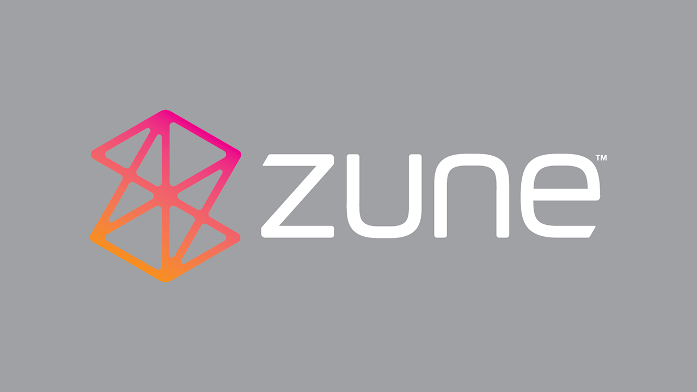

Zune Twentieth Anniversary

Twenty years ago, on the 14th of November 2006 Microsoft released Zune, which was their very own digital music player that was later known as the Zune 30, which was available in brown as well as white, black and other limited colours. Zune was a response from Microsoft that followed their digital music ambitions that started with MSN Music along with PlaysforSure in 2004 for certifying support for third-party digital music players. Zune was part of Microsofts connected entertainment vision that was designed around the principles of sharing, discovery and community that provided new ways for consumers to connect and share entertainment experiences. Zune was a 30GB digital media plater featuring Zune-to-Zune sharing that let owners share select fill-length sample tracks of select songs, their own recordings, playlists or pictures and full track of any sone for up to three times over three days from the Zune Marketplace where if liked a shared song you could buy it to listen for yourself. Not only could tracks be purchased individually but there was also Zune Pass subscription to download unlimited songs for a flat fee, a rare option for the time but something taken for granted with subscription services such as Spotify.
Zune didnt stop with just the original classic device made most famous in two of the Guardians of the Galaxy films but a just a year later in 2007 a new generation of devices which included the Zune 80, and the later Zune 120, with touch controls and more features, refreshed Zune software featuring a modern design that lives on in many elements of Windows to this day plus new options with Zune Originals where could customise the device with laser engraved art with designs from a variety of artists or personalised text. This second generation also introduced a new ultra-portable form factor with the Zune 4 and 8, plus later 16GB versions that made it easier to take digital music, podcasts and more on the go. Sharing with Zune was enhance with more social features including Zune Card which allowed people to share their music or to allow others to discover music from them as social was at the core of the device with welcome to the social being the key phrase for the device. Zune in 2008 saw hardware options grow with more colours available for the devices including new designs on Zune Originals plus new features to push music to collections with Zune Channels with updates to the Zune devices and software including make the Zune Marketplace available on devices and innovative display features in the software with Mixview which provided a relational display mapping artists to their influences, related artists and power listeners helping to discover even more music.
Zune in 2009 it expanded beyond the digital hardware it became Microsofts all-in-one digital entertainment brand by delivering films and TV to consumers that could be enjoyed on Windows, Xbox and the Windows Phone platform which was the mobile platform from Microsoft around that time. Zune hardware was only officially released in the United States and Canada but it was possible for those devices to be imported to countries like the United Kingdom and with the launch of Zune features beyond the hardware made features such as Zune Pass available in those countries which enabled that functionality on any imported Zune devices work too. Zune also saw the release of a third-generation device with the Zune HD which featured high-definition video output capabilities via a HDMI dock plus an OLED touch screen plus features such as being able to buy from FM so when listening to the radio devices with the built in FM tuner you could purchase the music you were listening to. Zune HD was available in black or platinum along with other colours from Zune Originals such as blue or red and was joined by new software features such as quick play for favourite content and Smart DJ where can listen to endless playlists using any artist, album or song as the starting point.
Zune was something I supported with my website CESPage.com Zune which featured content for much of the hardware, accessories and more along with articles and media which included software I created such as the original ZuneCardr which started as a desktop application and later a web-based application to create graphics of the Zune Cards from the Zune Social including one design where you could show which Zune you owned, something that lives on today with Zunepedia Creator, and then ZuneCardr became an application to bring Zune Cards to Windows Phone, that I assumed would be temporary until that feature came officially but that day never came and over 333,000 people would use my application for that purpose instead. Zunepedia itself was created five years ago to celebrate the fifteenth anniversary of the announcement of Zune which took advantage of the content collected for the website and wanted to make use of and share to create a free digital coffee table book which has been refreshed this year for the twentieth anniversary of Zune and the fifth anniversary of Zunepedia.
Zune was not to last - I actually got an insight into this before it happened when in 2010 I attended an event in London where there was chance to ask questions to the then CEO of Microsoft and asked if the Zune was going to be released in the UK and he quickly answered "No", followed by the statement, "It is all about the phone now" referring to Windows Phone and covered in an Article from Neowin on Microsoft CEO Steve Ballmer confirms no Zune HD for Europe and indeed just a few months later the hardware was discontinued in 2011 and a year after that the brand was retired from platforms such as Xbox when the music service became Xbox Music, then Groove Music which was shut down in 2017 and Windows Phone / Windows 10 Mobile which themselves were both discontinued by 2019. Zune Video had become Xbox Video them Movies / Films & TV but even that was discontinued in 2025 which finally closed the chapter on Microsofts connected entertainment vision.